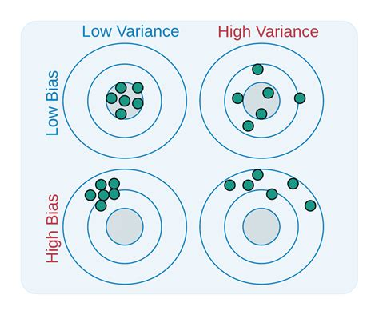
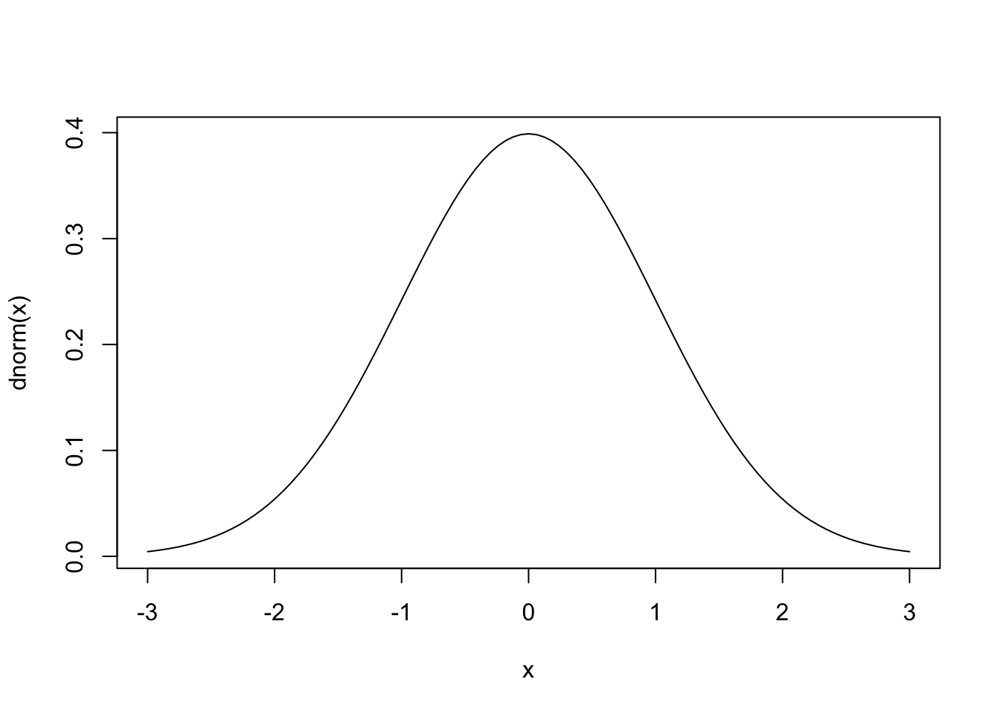
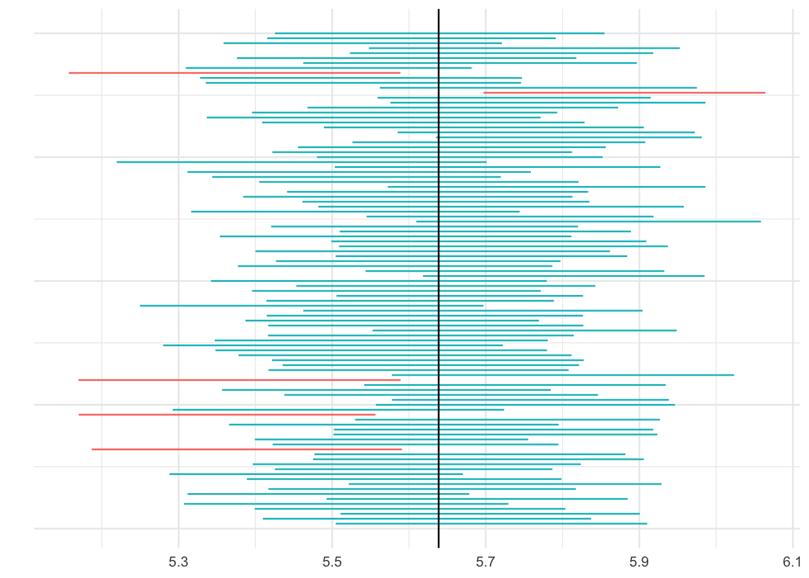

p | pq | sqrt(pq) |
|---|---|---|
0.1 | 0.09 | 0.30 |
0.2 | 0.16 | 0.40 |
0.3 | 0.21 | 0.46 |
0.4 | 0.24 | 0.49 |
0.5 | 0.25 | 0.50 |
0.6 | 0.24 | 0.49 |
0.7 | 0.21 | 0.46 |
0.8 | 0.16 | 0.40 |
0.9 | 0.09 | 0.30 |
Lecture 20
Large-Sample Estimation
8.1 - Where We’ve Been and Where We’re Going
Statistical Inference
Inference - specifically, decision making and prediciton - plays a very important role in many people’s’ lives. For example:
The government needs to predict short- and long-term interest rates.
An engineering needs to decide if a new typs of steel is more resistant to high temperatures
Student needs to decide to take the subway or bus depending on how long it takes for each.
FDA needs to decide if a new drug helps patients
A fan needs to decide if the Warriors are going to blow a 20 point lead at halftime.
The job of the mathemetical statistician is to provide methods to both make these guesses and provide a measure of accuracy around those guesses (goodness of the inference)
This is done by making decisions or predictions about parameters e.g. the mean, standard deviation.
Two different ways to make inferences:
- Estimation
- Hypothesis testing
To estimate the value of a population parameter, you use an estimator - a statistic calculated using informatino fro the sample
- Point Estimation
- Interval estimation
8.2 Point Estimation

How to estimate a population mean or Proportion
To estimate the population mean \(\mu\) for a quantitative population, the point estimator \(\bar x\) is unbiased with standard error estimated as:
\[ \text{SE} = \frac{s}{\sqrt{n}} \]
The 95% margin of error when \(n \ge 30\) is estimated as
\[ \pm 1.96 \times \frac{s}{\sqrt{n}} \]
For a population proportion $p$ for a binomial population, the point estimator \(\hat p = x/n\) is unbiased. with standard error estimated as
\[ \text{SE} = \sqrt{\frac{\hat p \hat q}{n}} \]
The 95% margin of error when \(n\hat p \gt 5 \text{ and } n \hat q \gt 5\) is estimated as
\[ \pm 1.96 \times \sqrt{\frac{\hat p \hat q}{n}} \]
Example 8.4
A scientist is studying a species of polar bear, found in and around the Arctic Ocean.
A random sample of \(n = 50\) polar bears produced an average weight of 980 pounds with a standard deviation of 105 pounds. Use this information to estimate the average weight of all Arctic polar bears.
You can be fairly confident that the sample estimate of 980 pounds is within \(\pm 29\) lbs of the population mean.
Example 8.5
Estimate the true population proportion of adults who believe that global warming is a very serious problem, and find the margin of error for the estimate. 100 adults are sampled and fine that 73% of the sampled adults think global warming is a very serious problem.
Margin of error is about .09, p can be as small as .64 or as large as .82
SE is related to numerator and denominator, but numerator doesn’t change very much.
Therefore, margin is mostly dictated by sample size.
8.3 Interval Estimation
- A confidence interval:
95% confidence interval can be shown below. What are the tail. The probabiltiy remaining in the two tails is noted as \(\alpha\). How much does each tail have?
How does it looks drawn on the standard normal?

A (1 - \(\alpha\))100% Large-Sample Confidence Interval
\[ \text{(Point estimator) } \pm z_{\alpha/2} \times \text{SE} \]
This formula generates two values: the lower confidence limit and the upper confidence limit.
| Confidence Coefficient, (1 - \(\alpha\)) | \(\alpha\) | \(\alpha/2\) | \(z_{\alpha/2}\) |
|---|---|---|---|
| .90 | .10 | .05 | 1.645 |
| .95 | .05 | .025 | 1.96 |
| .98 | .02 | .01 | 2.33 |
| .99 | .01 | .005 | 2.58 |
Example 8.6
The average daily intake of dairy products for a random sample of \(n = 50\) adult males was \(\bar x = 756\) with standard deviation \(s = 35\) grams per days.
Construct a 95% and 99% confidence interval.
Example 8.8
A random sample of 985 likely voters - were polled by the Republican party. Of those survey, 592 indicated that they intended to vote for the Republican candidate. Construct a 90% confidence interval for \(p\).
Interpreting the Confidence Interval
Let’s pretend we are interested in the heights of students, if we were all knowing we could have the heights of every student - let’s say there are 100,000:
Min. 1st Qu. Median Mean 3rd Qu. Max.
4.000 5.091 5.670 5.639 6.219 7.000 Here is a sample (rounded to .1 feet):
[1] 5.2 6.4 6.8 6.5 6.0 4.2 5.4 5.5 5.8 5.2 5.3 5.0 5.1 6.4 6.4 5.8 7.0 4.9 6.2
[20] 4.9 6.6 6.5 5.7 5.6 5.9 6.9 5.4 5.3 5.1 6.8 5.5 5.9 5.1 5.3 6.0 4.5 4.8 6.1
[39] 6.7 5.3 5.0 5.0 6.4 5.8 4.6 6.7 4.9 6.2 7.0 4.9Mean:
[1] 5.71SD:
[1] 0.7318963SE:
[1] 0.104Interval:
[1] 5.606 5.814
Homework
[1] "8.2.30, 8.2.32, 8.3.18-20, 8.3.31, 8.3.37"Answers: Section 8.2 and 8.3